Knox Manage 23.12 release notes
Last updated April 3rd, 2024
New
Support for new OS versions
Knox Manage now supports:
- Android 14
- iOS 17
Identity provider federated authentication
Previously, enterprises could use on-premises AD, or LDAP-based Microsoft Entra (formerly Azure AD) Domain Service and Microsoft Entra ID Graph to sync user information with Knox Manage servers.
Starting in 23.12, Knox Manage also supports user authentication for Microsoft Entra ID and supports both user sync and authentication for two additional identity providers — Okta and Ping Identity.
To set up user authentication, IT admins for the service providers must specify their information in the identity provider portals.
Microsoft Entra ID Graph, Okta, and Ping Identity use the OIDC (OpenID Connect) authentication standard and support the following:
-
During device enrollment, user authentication is directly managed by the identity providers. Instead of the Knox Manage sign-in UI, device users are routed to the respective identity providers for authentication.
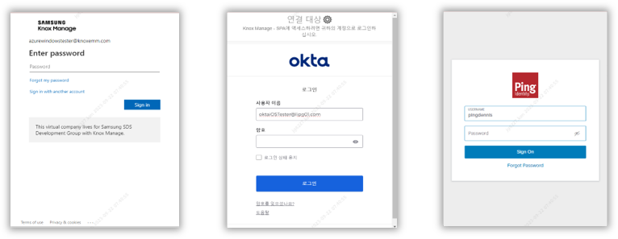
-
Users must be set up in both the Knox Manage console and the identity provider portals.
-
Multi-factor authentication (MFA) is supported for newly-enrolled devices.
Okta and Ping Identity support the SCIM (System for Cross-Domain Management) protocol. Knox Manage user and group information is automatically synchronized after specifying the settings for Okta and Ping Identity.
Since both LDAP and SCIM protocols are now supported, the Knox Manage console menus reflect the following changes:
| Previous menu | New menu |
|---|---|
| Advanced > AD/LDAP Sync | Setting > Identity & Directory |
| Sync Service | Connection |
| Sync History | History |
| Advanced > Azure AD integration | (Removed) |
Support for macOS
This version of Knox Manage adds macOS to its supported device platforms. For the time being, the Ventura release of the OS is supported. You can now enroll Macs using Apple Automated Device Enrollment (ADE). The following management features are supported for this release:
-
You can view device details related to security, general information, and networking.
-
You can use Volume Purchase Program (VPP) for public app management. The apps are synced with the Apple Business Manager (ABM) console. Apps supported by both iOS and macOS are registered separately in the Knox Manage console, but share a single license.
-
You can use device commands and apply policies, similar to other platforms. The supported policies and device commands are:
Category Policies System Camera
Screen capture
Manual installation for profile
Factory reset
USB restricted mode
Security Passcode policies
Passcode modification
Screen unlock with Touch ID
Touch ID timeout (min)
iCloud Private relay
Document synchronization
Configurations Wi-Fi, Certificate Category Device commands Device Push profile
Lock device
Factory reset
Power off device
Reboot device
Knox Manage Unenroll device Device info. Sync device information
Sync installed app list
Custom wallpaper policy for Android
Previously, background images were resized to fit the screen, which reduced the image quality.
With Knox Manage 23.12, a new Screen Orientation policy is available, with Portrait and Landscape orientation values available to better fit custom wallpapers on the screen, removing the need to resize the image.
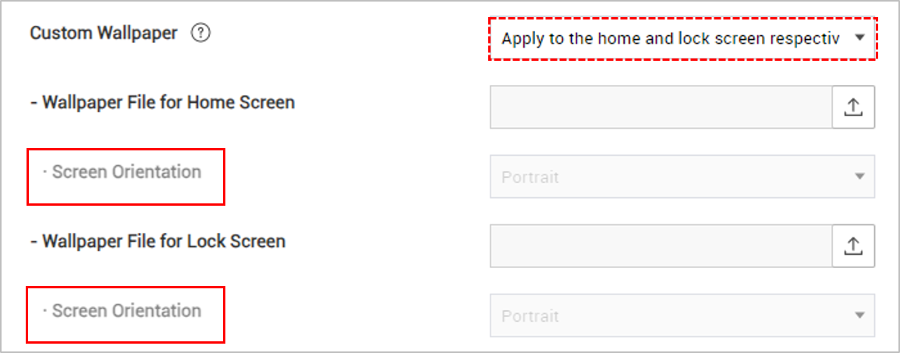
Enrollment ID for work profile devices managed by AMAPI
Starting in Knox Manage 23.12, AMAPI devices enrolled with work profiles are provided an enrollment-specific ID. This ID is used instead of standard device identifiers, such as serial number and IMEI/MEID, which are hidden in work profiles. You can view this new ID on the Device Details page, on the Device Information tab, as Enrollment Specific ID.
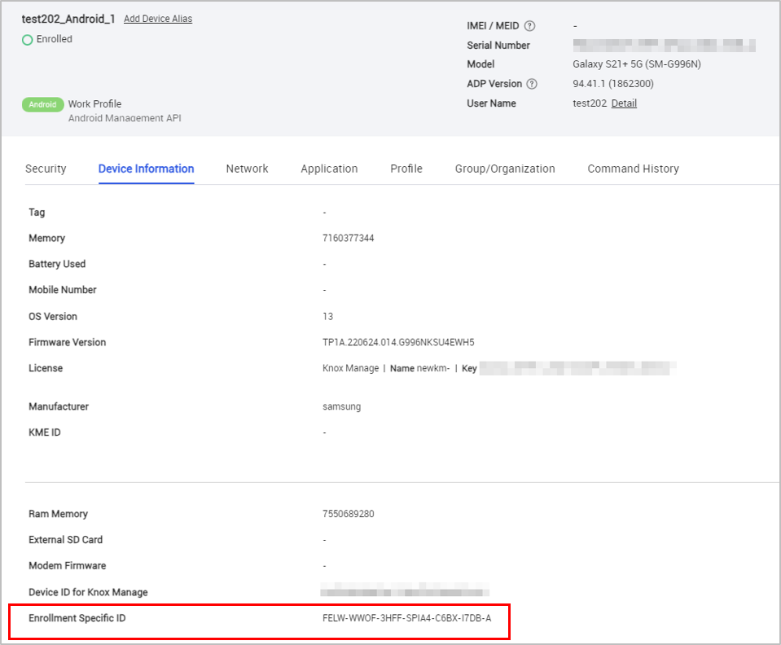
Administrative templates for Group Policy in Windows
Knox Manage 23.12 lets you populate Windows policies in the Knox Manage console using administrative templates. For example, you can configure Microsoft Defender Antivirus by building a template that sets the service’s policies.
To add an administrative template, in the Administrative Templates > List policy, click Add, and then work through each policy you wish you set.
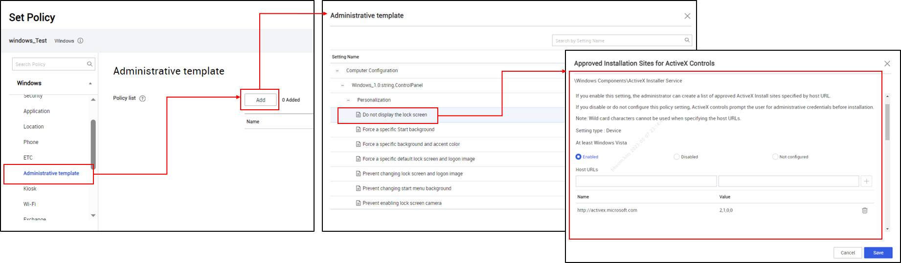
Ability to monitor Chromebooks in the Brazil region
Knox Manage 23.12 comes with a new location monitoring service that enables you to efficiently keep track of managed Chromebooks if you operate a tenant in the Brazil region.
Chromebooks are monitored by installing a new Chrome extension called Samsung Knox Manage, available for Brazilian users on the Chrome web store. On the Knox Manage console, add the extension as an app and assign it to an organization. You can also force-install the extension on individual Chromebooks. Once installed, you can review the location data of the devices from the console.
For detailed instructions on this topic, see Check the location of ChromeOS devices in Brazil.
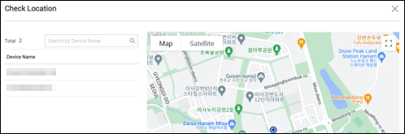
New agent policy for collecting location data
With Knox Manage 23.12, a new Knox Manage agent policy — Allow Collecting Location Data — lets you track a Windows or iOS device’s location during enrollment and according to the scheduled software inventory collection cycle.
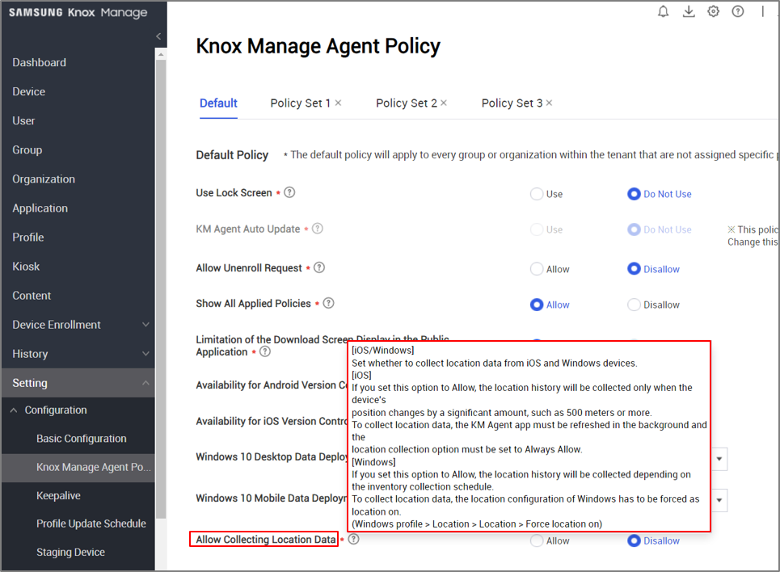
Support for Play Store app feedback
With Knox Manage 23.12, apps on the Play Store can now relay feedback about the device’s download blocklist and whether they’re behaving accordingly.
Updates
Improvements to shared profiles for Android
Previously, you could only apply the staging device settings to a staging user. Moreover, the settings were limited to a smaller set of options as compared to other users.
With Knox Manage 23.12, you can now apply regular Android Enterprise profiles to staging users on shared devices. You can find the updated staging user profile settings at Profile > Kiosk & Staging > Staging Device Settings while managing profiles.
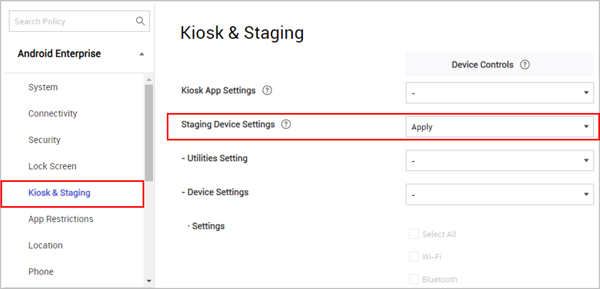
You must manually migrate existing staging devices to the new settings. To do so, on the Kiosk & Staging page, create a new profile for the staging user with the required settings. On the Setting > Configuration > Staging Device page, click Push Profile to apply the profile to the staging user, which automatically also updates the Knox Manage agent on the device to the 23.12 version. The Staging Device menu option isn’t available for new customers or for customers who don’t have any enrolled staging devices, or if their staging devices are disconnected or their licenses expired.
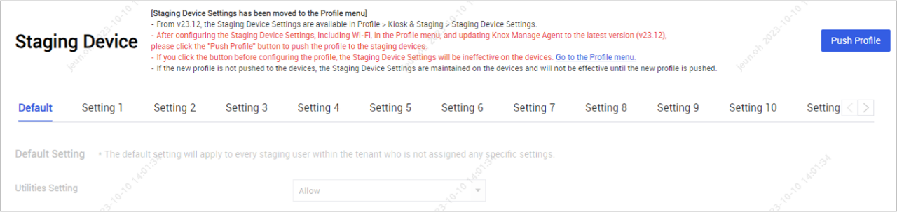
Additionally, when setting up an APN for an Android Enterprise shared device, the APN settings now automatically apply to secondary users, too. Previously, the APN settings were applied only to the staging user.
Changes to Bluetooth policies for Android
With Knox Manage 23.12, the Connectivity policy group for Android Enterprise is renamed to Connectivity.
Additionally, the Bluetooth > Data Transfer policy is deprecated. Existing profiles that set this policy will continue to apply it to devices, but it can’t be modified in the profile itself.
The configurations previously available through the Data Transfer policy are now included in the Bluetooth Share policy. When saving the profile, you’ll be prompted to verify updates to the Bluetooth Share policy values. The following table shows how the values are mapped between the policies:
| Data transfer policy value (Android 5 and higher) | Bluetooth Share policy value (Android 8 and higher) | Changes |
|---|---|---|
| Disallow |
Allow Disallow |
If the Bluetooth Share policy is set to N/A or Allow, it's changed to Allow. If the Bluetooth Share policy is set to Disallow, sharing is turned off for devices running Android 8 and lower. |
| Allow | N/A, Allow, Disallow | No change. The Bluetooth Share policy continues to apply to devices. |
| N/A | N/A, Allow, Disallow | No change. The Bluetooth Share policy continues to apply to devices. |
Changes to app restriction policies for Android
With Knox Manage 23.12, the app restriction policies are updated as follows:
| Policy | Change |
|---|---|
| App Execution Blocklist Setting | Updated policy. Excluded apps now remain in the app list as icons, but they can’t be launched. |
| Hide Apps Setting | New policy. Specifies apps that must be hidden in the interface. |
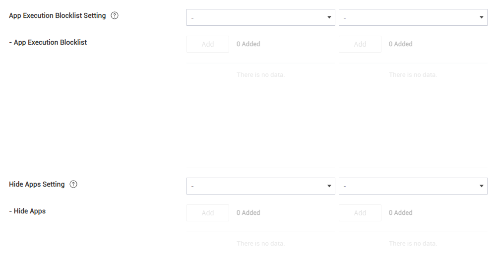
Changes to 802.1xEAP policy for Android
Previously, configuring the 802.1xEAP policy required you to also set CA certificate and either Domain or Alternate Subject.
With Knox Manage 23.12, for Android devices running Android 13 and higher, including Wear OS devices if you set Trust On First Use to Use, no additional policies are required. However, if Trust On First Use, CA certificate, and Domain are each set, the values for CA certificate and Domain take precedence.
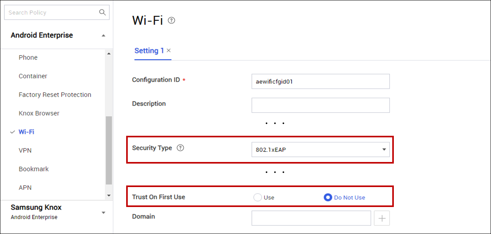
Enhancement to Location policy for work profile devices on Android
Previously, when enrolling a device with a work profile, the device user was always asked to provide location permissions, even if the no location policies were set.
With Knox Manage 23.12, work profiles no longer require location permissions unless the Report Device Location policy is configured.
| Report Device Location value | Impact on work profile |
|---|---|
| Allow | Immediately upon enrollment, the device user is prompted to provide permission to enable location tracking on the device. |
| User Consent | The device’s location is polled periodically, and a persistent notification asks them to consent to full monitoring. If they consent to the monitoring, then the notification is dismissed. |
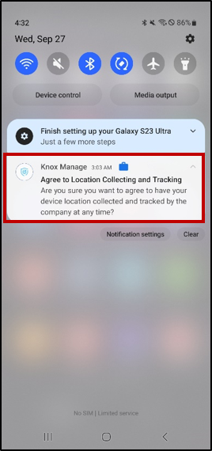
Enhancements to Android kiosks
For improved security, you can now set a limit on the number of attempts a device user can take to exit kiosk mode. If they exceeding the limit, they must wait 10 or 30 minutes before they can try again.
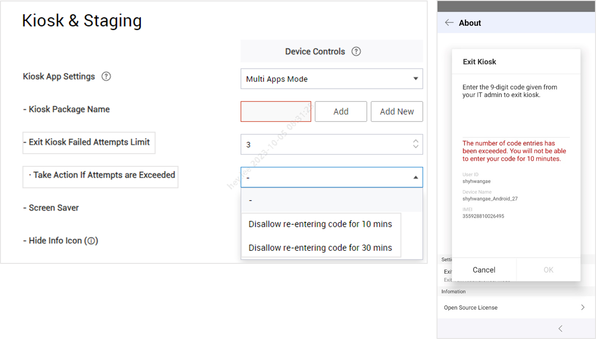
Additionally, you can choose to hide or show the information icon displays on the Kiosk screen.
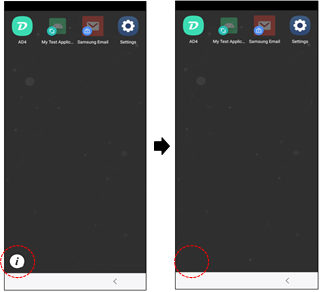
Changes to kiosk policies for Wear OS
For Wear OS kiosks running Wear OS 4, several policy changes are available. These policies relate to sound, widget tiles, and the interface.
| Policy | Change |
|---|---|
| Sound Mode Settings | New policy. Specifies whether users can change sound modes on the device. |
| Sound Mode > Vibrate with Sound | New policy. Controls vibration when the Sound mode policy is set to Sound. |
| Widget Tile Settings | New policy. Allows the device user to add or remove widget tiles. |
| Quick Panel & Notifications | Updated policy. New Notification only value shows the notification drawer but hides the quick panel. |
Improved Knox Asset Intelligence integration with Knox Manage
Knox Manage 23.12 integrates Knox Asset Intelligence directly into the Knox Manage console for a more streamlined enrollment process. You can now deploy the intelligence service to devices in a small number of clicks on the Setting > Android > Knox Asset Intelligence page.
When deploying the service, the Knox Asset Intelligence agent automatically installs on devices, which are granted the permissions it needs. You can then find intelligent data about devices on their details page.
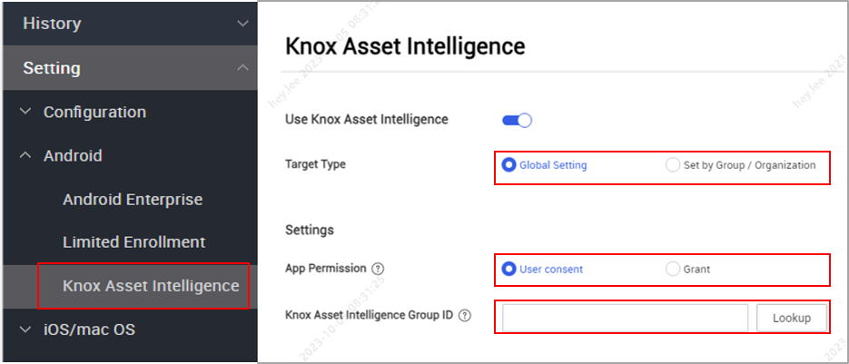
For more information, see Enroll devices.
Enhancements to admin management
With Knox Manage 23.12, you can now grant sub-admins the ability to access and manage reports.
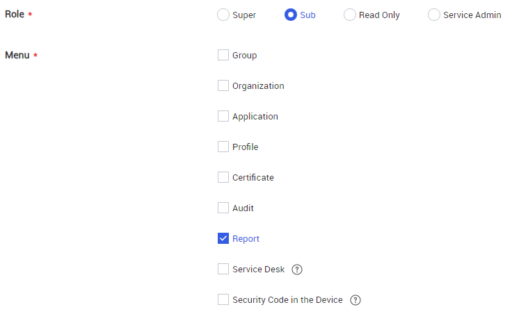
Additionally, you can also export the list of admins as a spreadsheet.
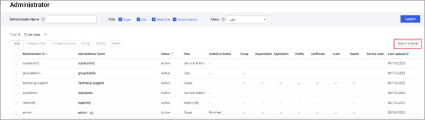
For more information, see Add an administrator.
Updates related to license expiry
After a license expires, most Knox Manage features are restricted on devices. With Knox manage 23.12, the following additional changes apply to Android devices after the license expires:
- Device inventory syncing is restricted
- The Day & Time event profile is restricted
- Knox Manage agent versions lower than 23.09 are now supported
Enhancements to device information
On the Device page, you can now search for a device by its integrated circuit card ID (ICCID). The device list also now has a column for ICCIDs.
Lastly, the Device Details page now has an ICCID Information field for eSIMs on iOS devices.
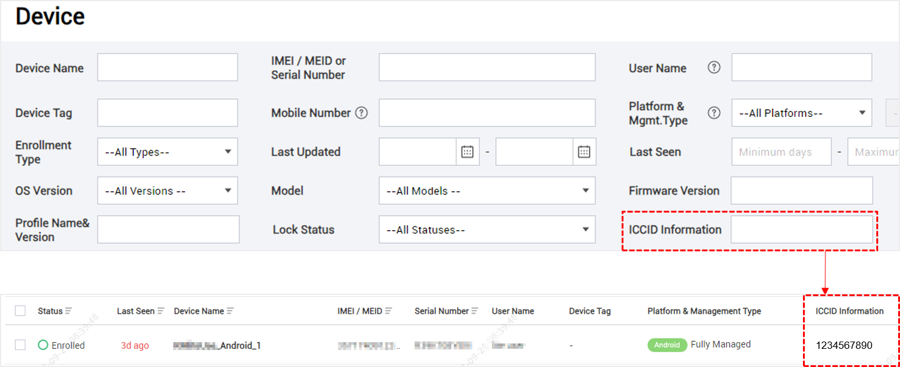
Updates to the Custom Animation policy for Samsung devices
Previously, the Custom Animation policy was only available with a Knox Suite Premium license.
With the latest licensing changes, the policy is now available for all license types.
The Premium icon is now also removed from the interface.
Terminology updates for Android Enterprise and Samsung Knox policies
With Knox Manage 23.12, the Android Enterprise and Samsung Knox policies are renamed and reorganized as follows:
| Previous category | Previous policy name | New category | New policy name |
|---|---|---|---|
| System | System Update | System | System Updates |
| Automatic Date and Time | Date and Time | ||
| Interface | Wi-Fi Change | Connectivity | Wi-Fi Setting |
| Password | Password | Lock Screen | Screen Lock Policies |
| Minimum Complexity (Android 12 or later) | Set Minimum Complexity | ||
| Minimum Strength (Android 11 or earlier) | Set Minimum Strength | ||
| Minimum Number of Letters | Minimum Letters | ||
| Minimum Number of Non-Letters | Minimum Non-Letters | ||
| Minimum Number of Lowercase Letters | Minimum Lowercase Letters | ||
| Minimum Number of Capital Letters | Minimum Capital Letters | ||
| Minimum Number of Numeric Characters | Minimum Numeric Characters | ||
| Minimum Number of Special Characters | Minimum Special Characters | ||
| Maximum Number of Sequential Numbers | Maximum Sequential Numbers | ||
| Maximum Number of Sequential Characters | Maximum Sequential Characters | ||
| Password Lifecycle Settings (Android 6 or later) | Screen Lock Requirements | ||
| Password Expiration Timeout (Days) | Screen Lock Expiration (days) | ||
| When to Send Notification Before Expiration (Fully Managed) | Send Notification Before Expiration (Fully Managed) | ||
| Maximum Failed Login Attempts | Unlock Attempt Limit | ||
| If the Maximum Failed Login Attempts Are Exceeded (Fully Managed, Fully Managed with Work Profile) | Take Action If Attempts Are Exceeded (Fully Managed, Fully Managed with Work Profile) | ||
| If the Maximum Failed Login Attempts Are Exceeded (Work Profile) | Take Action If Attempts Are Exceeded (Work Profile) | ||
| Password Required Range (hours) | Screen Lock Timer (hours) | ||
| Password History | Screen Lock History | ||
| If Password Compliance is Violated | Screen Lock Compliance Violation | ||
| Maximum Screen Timeout | Maximum Screen Timeout Allowed | ||
| Kiosk | Set Application | Kiosk | Kiosk Package Name |
| App Auto Update | Automatic App Updates | ||
| File Upload | File Uploads | ||
| Text Copy | Copy Text | ||
| Utilities Setting | Utilities Settings | ||
| - Power | - Power Off | ||
| - Home | - Home Button | ||
| - Key Guard | - KeyGuard | ||
| JavaScript | Run JavaScript | ||
| HTTP Proxy | Use HTTP Proxy | ||
| Application | Installation of App from Untrusted Sources | App Restrictions | Untrusted App Sources |
| System App Activation Setting | System App Reactivation Setting | ||
| Wi-Fi | Remove Available | Wi-Fi | Allow User to Remove the Network |
| Attempt Automatic Connection | Automatically Connect to the Network |
Policy menu changes for Android Enterprise and Samsung Knox
With Knox Manage 23.12, the Android Enterprise and Samsung Knox policy categories are updated as follows:
| Policy | Previous category | New category |
|---|---|---|
| Developer mode | Samsung Knox > System | Android Enterprise > System |
| External SD Card | System | Connectivity |
| Screen Timeout | Security | Lock Screen |
| Maximum Screen Timeout Allowed | Security | Lock Screen |
The following Android Enterprise and Samsung Knox policy values are also updated:
| Policy | Previous values | New values |
|---|---|---|
| System > Camera |
Allow Disallow all |
Allow Disallow |
| Connectivity > Wi-Fi |
Allow Disable off Disable on |
Allow Force on Force off |
| Connectivity > Bluetooth |
Allow Disable on |
Allow Force off |
| Kiosk > Automatic App Updates |
Use Do not use |
Allow Disallow |
Improvements to admin invitations
Previously, two separate admin invitation emails were sent from the Knox Admin Portal and Knox Manage console when adding an admin.
With Knox Manage 23.12, only one common invitation email is sent, from the Knox Admin Portal.
Furthermore, predefined emails and SMS messages are sent in multiple languages based on the country code set in for your tenant. Supported languages are Korean, English, French, German, Italian, Portuguese, Spanish, and Polish. For all other country codes, English is the default language.
For more information, see Administrator account overview.
Terminology changes in the Knox Manage console
With Knox Manage 23.12, the following terms have changed on the Knox Manage console:
| Interface component | Previous term | New term |
|---|---|---|
| All | Apply Profile | Push Profile |
| Password | Screen Lock | |
| User page | User | Source |
| Organization page | User | Source |
| Profile page | Manage Control App | Manage System App |
| Android Enterprise EMM Registration Information page | Register | Link |
| Unregister | Unlink | |
| Chrome OS EMM Link Information page | Register | Link |
| Unregister | Unlink | |
| Device page | Last Updated | Status Last Updated |
Additionally, the following components in the interface are also revised:
- On the Device Details page, the Last Connected information is now displayed as a tooltip in the Last Seen field.
- On the User page, Apple VPP is added as a new search filter. In the Source column, Apple VPP is displayed as tooltip where applicable.
- On the Group page, when you delete a group, the changes are pushed to the group’s users immediately.
- On the Audit Log page, for the the Audit Type field you can now choose between Console, Server, and Device. Previously, the available values were Console/Server and Device.
Improvement to default time zone setting
Previously, upon creating a tenant, the default time zone was GMT (+00:00).
With Knox Manage 23.12, the default time is automatically set to the capital of the country where the tenant is created.
Deprecations
Security update for PII storage and search
This release delivers a significant update to Knox cloud infrastructure that further hardens how fields with personally identifiable information (PII) are stored. This update impacts how you can search for PII across all Knox services.
For the technical details about this update, as well as an up-to-date breakdown of how this affects Knox Manage, see Security notice regarding storage and search behavior for PII.
On this page
Is this page helpful?